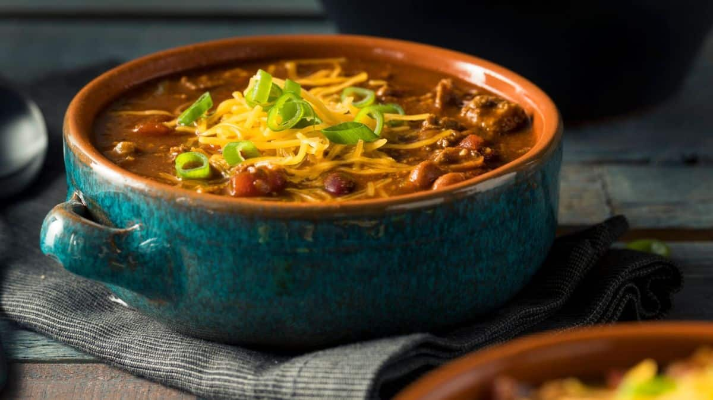

Chili

Chili Con Carne with Pueblo Green Chilis
This chili has the appearance and general flavor of a typical red chili con carne, which most people are used to, but it uses Pueblo green chili peppers to give it more of a Colorado flavor profile.
This chili can be topped with cheese, sour cream, fresh onions, or jalapenos. It can also be served with a side of corn bread.
Ingredients
- 2 lbs Ground Beef
- 1 cup Chopped Onions
- 4-6 Garlic Cloves
- 2 (16 oz) cans Diced Tomatoes
- 1 (16 oz) can Black Beans, undrained
- 1 1/2 cups Tomato Juice
- 6-8 Fresh Pueblo Green Chilis
- 2 Tbls Worcestershire Sauce
- 4 tsp Paprika
- 2 tsp sugar
- 1 tsp salt
- 2 tsp Dried Oregano
- 1 tsp Gound Cumin
- 1/2 tsp Celery Salt
- 1/2 tsp Cayenne Pepper
- 1/2 tsp Black Pepper
- 1/4 tsp Dried Mustard
- 1 Tbls White Vinegar
Instructions
- Brown ground beef, onions and garlic, and drain
- Add all other ingredients and simmer for 45 minutes to an hour
Home Page